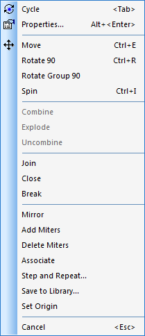
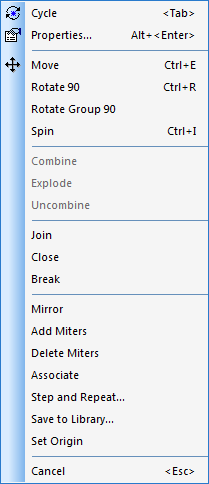

20160301
右键菜单(Right Menu)
绘图右键菜单
Drafting Right Menu


布线空白处右键菜单
Space Right Menu
元件布局右键菜单
Component Placement Right Menu


选择焊盘(Select Pad)
")
选择布线中的一小段(Select 1 Route)
")
选择布线中的弯段(Select N Route)
")
Select Right Menu
Select 2D Line
选择标签(Select Label)
")
")
选择形状(Select Shapes)
") 

选择端点(Select Terminal)